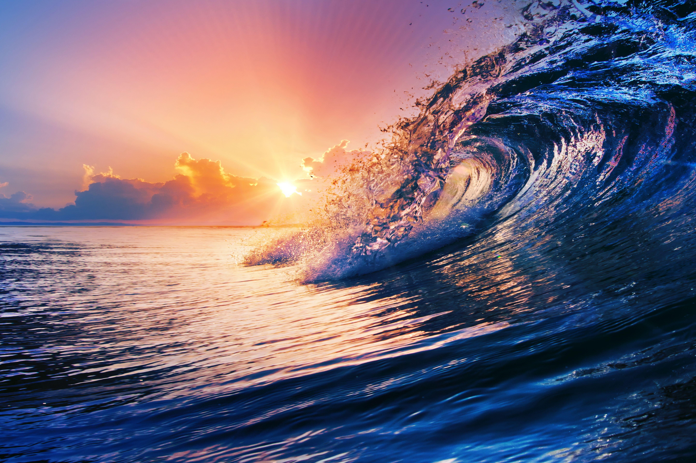

Площадь поверхности Земли составляет примерно 510 млн км2 (примем её за 100%). Площадь Мирового океана составляет примерно 361 млн км2, или 70,8% земной поверхности, или 2/3 поверхности. Следовательно, Мировой океан — это планетарный географический объект.
Мировой океан (или просто Океан) — это главная часть гидросферы. Мировой океан объединяет в себе воды всех океанов Земли.
Известно, что наша планета Земля обладает уникальной формой. Это фигура, близкая к шару, но немного сплюснутая у полюсов, получила название геоид. Поверхность геоида определяется по водной поверхности Мирового океана.
Средняя глубина Мирового океана 3800 м, самая глубокая Марианская впадина — 10 994 м.
Обширные части Мирового океана, расположенные между отдельными материками, называются океанами. Каждый океан имеет характерное строение и рельеф дна, самостоятельную систему течений и ветров.
Море — это часть океана, отличающаяся особенностями географического положения, а также возможными особенностями рельефа дна, свойствами воды, климатическими условиями, особенностями растительного и животного мира.
Относительно небольшие, вдающиеся в сушу части морей или океанов называются заливами. В то же время название «залив» закрепилось за некоторыми большими по площади акваториями океана, которые правильнее было бы называть морями, закрепилось название залив, Бенгальский и Бискайский заливы у берегов Евразии.